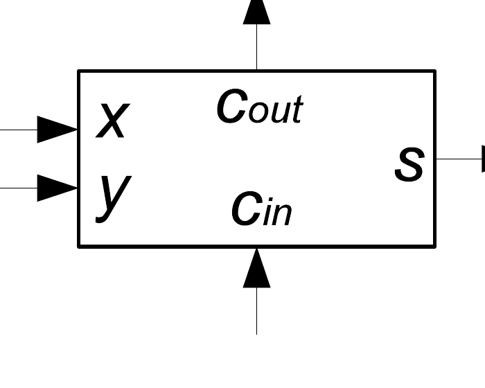
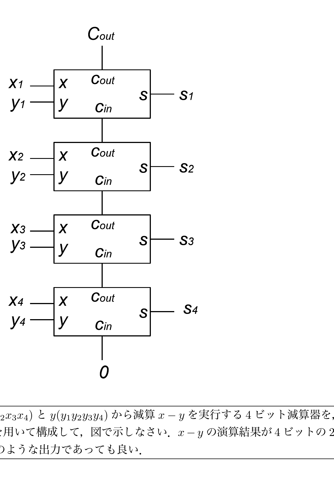

グレイ符号とハミング符号
0と1を使った数の表現には2進符号（通常の2進数表現）を用いることが多い。0と1からなる同じ桁数の2つの符号を比較したとき、桁ごとの0と1が異なる個数を数えたものをハミング距離と呼ぶ（例：$5=$"101"と$6=$"110"のハミング距離は下位2桁が異なるので2）。2進符号以外にグレイ符号がある。0〜7までの4桁2進符号とグレイ符号の対応は次の通り。
| 10進数 | 2進符号 | グレイ符号 |
|---|---|---|
| 0 | 0000 | 0000 |
| 1 | 0001 | 0001 |
| 2 | 0010 | 0011 |
| 3 | 0011 | 0010 |
| 4 | 0100 | 0110 |
| 5 | 0101 | 0111 |
| 6 | 0110 | 0101 |
| 7 | 0111 | 0100 |
グレイ符号は2進符号と同じ桁数で符号化可能であり、値が隣接する符号どうしのハミング距離が常に1になる、という性質を持つ。
(a) 8〜15の2進符号とグレイ符号
8〜15までの数に対応する4桁の2進符号、グレイ符号の表を作成しなさい（条件：4桁の0/1符号、異なる数は異なる符号、隣接する符号間のハミング距離が常に1。この3条件を満たせば正解とする）。
解答を見る
上の表の0〜7のグレイ符号は、標準的な「反射二進グレイ符号」$g=b\oplus(b\gg1)$（2進符号$b$と、それを1ビット右シフトしたものとのXOR）で作られている。実際に0〜7で確認すると、例えば$6=0110$を右シフトすると$0011$、XORをとると$0110\oplus0011=0101$となり表と一致する。この規則をそのまま8〜15まで延長すればよい。
各行の計算（2進符号を右に1ビットシフトし、元の符号とXORする）：
- $8=1000$、右シフト$0100$、XOR$=1100$
- $9=1001$、右シフト$0100$、XOR$=1101$
- $10=1010$、右シフト$0101$、XOR$=1111$
- $11=1011$、右シフト$0101$、XOR$=1110$
- $12=1100$、右シフト$0110$、XOR$=1010$
- $13=1101$、右シフト$0110$、XOR$=1011$
- $14=1110$、右シフト$0111$、XOR$=1001$
- $15=1111$、右シフト$0111$、XOR$=1000$
境界のつなぎ目もハミング距離1になっていることを確認しておく。$7=0111$のグレイ符号は$0100$、$8=1000$のグレイ符号は$1100$。両者は上2桁が"01"と"11"で1桁だけ異なり、下2桁は"00"どうしで一致するので、ハミング距離はちょうど1である。
| 10進数 | 2進符号 | グレイ符号 |
|---|---|---|
| 8 | 1000 | 1100 |
| 9 | 1001 | 1101 |
| 10 | 1010 | 1111 |
| 11 | 1011 | 1110 |
| 12 | 1100 | 1010 |
| 13 | 1101 | 1011 |
| 14 | 1110 | 1001 |
| 15 | 1111 | 1000 |
4ビットの符号$X=x_1x_2x_3x_4$に対し、3個のビットを付加した7ビットの符号$X'=x_1x_2x_3x_4y_1y_2y_3$を、次の3条件を満たすように決める（これを4ビットのハミング符号と呼ぶ）。
$$x_1+x_2+x_3+y_1\equiv0\pmod2,\qquad x_1+x_2+x_4+y_2\equiv0\pmod2,\qquad x_1+x_3+x_4+y_3\equiv0\pmod2$$
(b) 4ビット符号とハミング符号の対応表
0〜15までの数を4桁で2進符号化して得られる4ビット符号$X$とハミング符号$X'$の対応表を完成させなさい（$0\to0000000$、$15\to1111111$は既知）。
解答を見る
3つの合同式は「$y_1,y_2,y_3$を、$x_1,\dots,x_4$のうち3つずつのXORとして決める」という意味であり、$y_1=x_1\oplus x_2\oplus x_3$、$y_2=x_1\oplus x_2\oplus x_4$、$y_3=x_1\oplus x_3\oplus x_4$と読み直せる。これを$X=0000$から$1111$まで16通りすべてに適用して求める。
- 0000：$y_1=0,y_2=0,y_3=0\to$0000000
- 0001：$y_1=0\oplus0\oplus0=0,y_2=0\oplus0\oplus1=1,y_3=0\oplus0\oplus1=1\to$0001011
- 0010：$y_1=0\oplus0\oplus1=1,y_2=0\oplus0\oplus0=0,y_3=0\oplus1\oplus0=1\to$0010101
- 0011：$y_1=0\oplus0\oplus1=1,y_2=0\oplus0\oplus1=1,y_3=0\oplus1\oplus1=0\to$0011110
- 0100：$y_1=0\oplus1\oplus0=1,y_2=0\oplus1\oplus0=1,y_3=0\oplus0\oplus0=0\to$0100110
- 0101：$y_1=0\oplus1\oplus0=1,y_2=0\oplus1\oplus1=0,y_3=0\oplus0\oplus1=1\to$0101101
- 0110：$y_1=0\oplus1\oplus1=0,y_2=0\oplus1\oplus0=1,y_3=0\oplus1\oplus0=1\to$0110011
- 0111：$y_1=0\oplus1\oplus1=0,y_2=0\oplus1\oplus1=0,y_3=0\oplus1\oplus1=0\to$0111000
- 1000：$y_1=1\oplus0\oplus0=1,y_2=1\oplus0\oplus0=1,y_3=1\oplus0\oplus0=1\to$1000111
- 1001：$y_1=1\oplus0\oplus0=1,y_2=1\oplus0\oplus1=0,y_3=1\oplus0\oplus1=0\to$1001100
- 1010：$y_1=1\oplus0\oplus1=0,y_2=1\oplus0\oplus0=1,y_3=1\oplus1\oplus0=0\to$1010010
- 1011：$y_1=1\oplus0\oplus1=0,y_2=1\oplus0\oplus1=0,y_3=1\oplus1\oplus1=1\to$1011001
- 1100：$y_1=1\oplus1\oplus0=0,y_2=1\oplus1\oplus0=0,y_3=1\oplus0\oplus0=1\to$1100001
- 1101：$y_1=1\oplus1\oplus0=0,y_2=1\oplus1\oplus1=1,y_3=1\oplus0\oplus1=0\to$1101010
- 1110：$y_1=1\oplus1\oplus1=1,y_2=1\oplus1\oplus0=1,y_3=1\oplus1\oplus0=0\to$1110100
- 1111：$y_1=1\oplus1\oplus1=1,y_2=1\oplus1\oplus1=1,y_3=1\oplus1\oplus1=1\to$1111111
$X=0001$の結果0001011、$X=1111$の結果1111111は、問題文で既に与えられている値とそれぞれ一致しており、計算方法が正しいことを裏づけている。
| $X$ | $X'$ | $X$ | $X'$ |
|---|---|---|---|
| 0000 | 0000000 | 1000 | 1000111 |
| 0001 | 0001011 | 1001 | 1001100 |
| 0010 | 0010101 | 1010 | 1010010 |
| 0011 | 0011110 | 1011 | 1011001 |
| 0100 | 0100110 | 1100 | 1100001 |
| 0101 | 0101101 | 1101 | 1101010 |
| 0110 | 0110011 | 1110 | 1110100 |
| 0111 | 0111000 | 1111 | 1111111 |
(c) 受信符号からの復号
0〜15までの数を4ビットハミング符号に符号化して信頼できない通信経路で送り、2ビット以上の誤りがないと仮定して、受け取った符号から元の数を求める表を完成させなさい（$0001000\to0$は既知の例）。
| 受け取った符号 | 元の数 |
|---|---|
| 0001000 | 0 |
| 0010010 | ? |
| 0100111 | ? |
| 1001000 | ? |
| 1100010 | ? |
| 0110011 | ? |
解答を見る
復号方法は次の通り。受信した符号の前半4ビット$x_1x_2x_3x_4$から、正しいはずの$y_1,y_2,y_3$を$y_1=x_1\oplus x_2\oplus x_3$、$y_2=x_1\oplus x_2\oplus x_4$、$y_3=x_1\oplus x_3\oplus x_4$として計算し、実際に受信した$y_1,y_2,y_3$と比較する。
- 3つとも一致すれば誤りなし。
- 1つだけ不一致なら、その$y$ビット自身が誤り（$x$部分は正しい）。
- 2つの$y$が同時に不一致になる場合は、その2つの式に共通して現れる$x$変数に誤りがある。$y_1$式には$x_1,x_2,x_3$、$y_2$式には$x_1,x_2,x_4$、$y_3$式には$x_1,x_3,x_4$が使われているので、例えば「$y_2,y_3$だけ不一致（$y_1$は一致）」なら、誤りは$y_2,y_3$に共通し$y_1$には含まれない変数、すなわち$x_4$にあると特定できる（他の組も同様に特定できる）。
実務上もっとも簡単な確認方法は、受信符号と(b)の対応表にある16個の正しい符号すべてとのハミング距離を見て、距離1（または距離0）のものを探すことである。以下、各行をこの方法で確認する。
- $0010010$：$x=0010$から期待される$y_1=0\oplus0\oplus1=1,y_2=0\oplus0\oplus0=0,y_3=0\oplus1\oplus0=1$。(b)の表で$X=1010$の符号は$1010010$であり、これと$0010010$を比べると先頭の1ビットのみ異なりハミング距離1。元の数=10。
- $0100111$：(b)の表で$X=0100$の符号は$0100110$であり、これと比べると末尾の1ビットのみ異なりハミング距離1。元の数=4。
- $1001000$：(b)の表で$X=1001$の符号は$1001100$であり、これと比べると5番目のビットのみ異なりハミング距離1。元の数=9。
- $1100010$：(b)の表で$X=1101$の符号は$1101010$であり、これと比べると4番目のビットのみ異なりハミング距離1。元の数=13。
- $0110011$：(b)の表で$X=0110$の符号はそのまま$0110011$であり、完全に一致（ハミング距離0、誤りなし）。元の数=6。
| 受け取った符号 | 元の数 |
|---|---|
| 0001000 | 0 |
| 0010010 | 10 |
| 0100111 | 4 |
| 1001000 | 9 |
| 1100010 | 13 |
| 0110011 | 6 |
(d) 一意に復元できる理由
4ビットハミング符号を送ったとき、7ビット中2ビット以上の誤りがなければ、受信符号から元の4ビット符号$X$を一通りに決められる理由を「ハミング距離」という言葉を使って説明しなさい（厳密な証明は不要）。
解答を見る
このハミング符号化によって生成される16個の正しい7ビット符号どうしは、互いのハミング距離が必ず3以上になるように設計されている。したがって、通信中に1ビットだけ誤りが生じても、誤りを含む受信符号と元の（正しい）符号とのハミング距離は1であり、他のどの正しい符号ともハミング距離2以上離れている（異なる2つの正しい符号間の距離が3以上あるため、それぞれから距離1の範囲どうしは重ならない）。したがって、受信した符号に最も近い（ハミング距離が最小の）正しい符号がただ1つに定まり、元の符号を一意に復元できる。
グレイ符号は、ロータリーエンコーダなど機械的に値を読み取るセンサでよく使われる。値が1つ変わるごとにビットが1個しか変わらないため、複数ビットの切り替わりタイミングがずれても読み取り誤差が小さく抑えられる（2進符号のように複数ビットが同時に変わると、読み取りタイミングのずれから全く違う値を誤読するおそれがある）。一方ハミング符号は、実際の通信路やメモリ・ストレージにおける誤り訂正符号（ECC: Error-Correcting Code）の最も基本的な形であり、「正しい符号どうしのハミング距離を十分大きく保つ」という設計思想は、現代のより高度な誤り訂正符号にも共通する。
2の補数表現と全加算器・減算器
$n$ビットの2の補数表現では、$-2^{n-1}\le x\le2^{n-1}-1$の整数$x$を表現できる。非負数はそのままの2進表現を用い、負数$x$は$x+2^n$の2進表現を用いる。
(a) 表現可能性と一意性
この範囲の整数$x$を$n$ビットの2の補数表現で表したとき、$n$ビット数で表現可能であること、また異なる整数を表現した結果は必ず異なることを説明しなさい（厳密な証明不要）。
解答を見る
$n$桁の2進数は、$0$から$2^n-1$までの$2^n$通りの異なるビット列を表現できる。
非負数$x$（$0\le x\le2^{n-1}-1$）はそのままの$n$桁2進表現を用いる。この範囲は$0\sim2^{n-1}-1$のちょうど$2^{n-1}$通りを埋める。
負数$x$（$-2^{n-1}\le x\le-1$）は$x+2^n$の$n$桁2進表現を用いる。この$x+2^n$の値域は$2^{n-1}\le x+2^n\le2^n-1$となり、これは非負数が使う範囲とは重ならない、残りの$2^{n-1}$通りをちょうど埋める。
両者を合わせると、ちょうど$0\sim2^n-1$の$2^n$通りすべてを1回ずつ使うことになる。したがって$-2^{n-1}\sim2^{n-1}-1$のすべての整数が$n$桁のビット列で表現可能であり（表現可能性）、かつ異なる整数どうしが同じビット列に対応することはない（一意性・単射性）。
(b) 1ビット全加算器の実現
1ビットの数$x,y$と下位ビットからの桁上げ$c_{in}$を入力とし、和のビット$s$と上位ビットへの桁上げ$c_{out}$を出力とする1ビット全加算器の真理値表は次の通り。
| $x$ | $y$ | $c_{in}$ | $s$ | $c_{out}$ |
|---|---|---|---|---|
| 0 | 0 | 0 | 0 | 0 |
| 0 | 0 | 1 | 1 | 0 |
| 0 | 1 | 0 | 1 | 0 |
| 0 | 1 | 1 | 0 | 1 |
| 1 | 0 | 0 | 1 | 0 |
| 1 | 0 | 1 | 0 | 1 |
| 1 | 1 | 0 | 0 | 1 |
| 1 | 1 | 1 | 1 | 1 |
次の7種類の基本素子を自由に（何個でも）使うことができる。

この基本素子を5つ使って1ビット全加算器を実現し、MIL記法で書きなさい。
解答を見る
次のように5個のゲートを組む。
合計5ゲート（XOR×2、AND×2、OR×1）。真理値表の8行すべてで検証する。
- $(x,y,c_{in})=(0,0,0)$：$t=0,s=0,p=0,q=0,c_{out}=0$
- $(0,0,1)$：$t=0,s=1,p=0,q=0,c_{out}=0$
- $(0,1,0)$：$t=1,s=1,p=0,q=0,c_{out}=0$
- $(0,1,1)$：$t=1,s=0,p=0,q=1,c_{out}=1$
- $(1,0,0)$：$t=1,s=1,p=0,q=0,c_{out}=0$
- $(1,0,1)$：$t=1,s=0,p=0,q=1,c_{out}=1$
- $(1,1,0)$：$t=0,s=0,p=1,q=0,c_{out}=1$
- $(1,1,1)$：$t=0,s=1,p=1,q=0,c_{out}=1$
いずれも与えられた真理値表の$s,c_{out}$と一致する。
以下、1ビット全加算器は、入力$x,y,c_{in}$と出力$s,c_{out}$を持つ次の箱として表す。

(c) 4ビット減算器の構成
この1ビット全加算器を4個、次のようにカスケード接続すると、4ビットの2進数$x(x_1x_2x_3x_4)$と$y(y_1y_2y_3y_4)$の加算を行う4ビット加算器になる（最下位の$c_{in}$は0）。

この1ビット全加算器と他の基本素子を用いて、4ビットの2進数$x(x_1x_2x_3x_4)$と$y(y_1y_2y_3y_4)$から減算$x-y$を実行する4ビット減算器を構成して図で示しなさい。$x-y$の演算結果が4ビットの2の補数表現で表せない場合は、どのような出力であっても良い。
解答を見る
2の補数表現の基本的な性質「$-y=\overline{y}+1$」（各ビットを反転してから1を加えると符号が反転する）を利用し、
$$x-y=x+(-y)=x+\overline{y}+1$$
として計算する。具体的には、上図の4ビット加算器と全く同じ4個の1ビット全加算器のカスケード構成をそのまま使い、次の2点だけを変更する。
- 各段の$y$入力を、$y_i$そのものではなく、$y_i$をNOTゲートに通して反転した$\overline{y_i}$にする（$i=1,2,3,4$、合計NOTゲート4個が追加で必要）。
- 最下位段（4段目）の$c_{in}$を、加算器では0だったところを1にする。
この2点の変更により、カスケード全体で計算される値は$x+\overline{y}+1$となり、これがちょうど$x-y$の2の補数表現に等しい。必要な追加素子はNOTゲート4個（$y_1\sim y_4$の反転用）のみで、1ビット全加算器4個の配線構造自体は加算器のときと変えなくてよい。
加算器と同じ4個の1ビット全加算器のカスケード構成を使い、各段の$y$入力をNOTゲートで反転した$\overline{y_i}$に置き換え、最下位段の$c_{in}$を0の代わりに1にする（$x-y=x+\overline{y}+1$）。追加素子はNOT×4個のみ。
「減算は各ビットを反転してから1を加えて加算する」という2の補数演算のテクニックは、CPU内部に減算専用の回路を別途持たなくても、加算器（と少数のNOTゲート、桁上げ入力の切り替え）だけで加算と減算の両方を実現できる、という実用上非常に重要な性質を生んでいる。個別問題1のハミング符号（誤り訂正）と個別問題2の2の補数表現（負数の表現）は見た目の題材は大きく異なるが、どちらも「限られたビット数の中で情報をどのように安全に、あるいは効率よく符号化するか」という情報表現の工夫という共通のテーマを持っている。